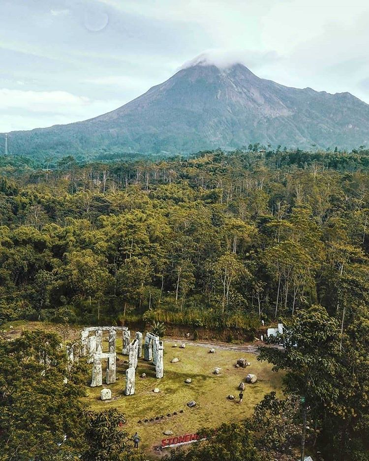
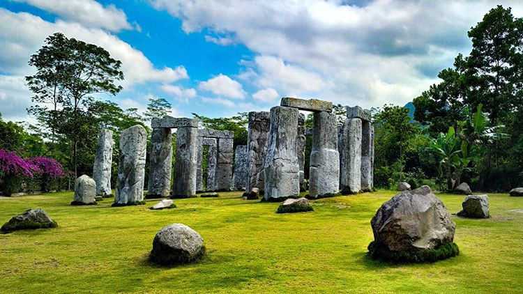
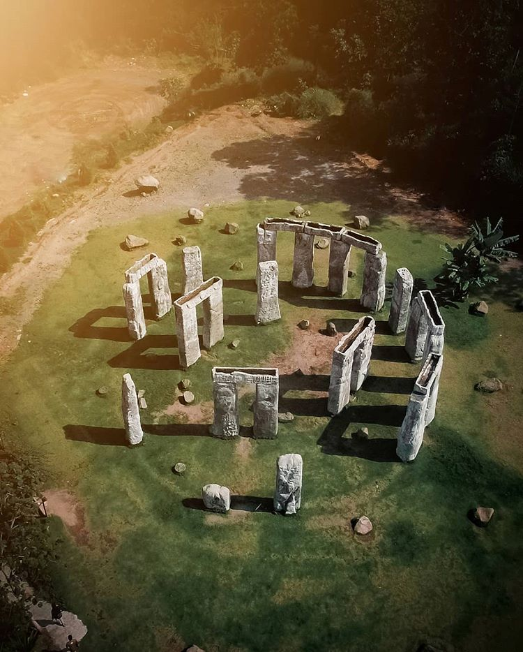

Stonehenge Jogja, Spot Wisata Indonesia "Selera Eropa"
Stonehenge Cangkringan adalah spot wisata baru yang unik. Biasanya Stonehenge dikenal sebagai salah satu lokasi wisata menarik di Inggris, namun di Indonesia juga dikenal Stonehenge Jogja.
Stonehenge Jogja adalah spot wisata unik dan instagrammable yang akhir-akhir ini muncul di time line dan berita-berita. Selain karena keunikannya, banyak diantara pengunjung yang baru mengetahui dan penasaran.
Stonehenge Merapi Jogja
Pernahkah Anda mendengar Stonehenge di Inggris? Atau mungkin beberapa dari Anda ada yang sudah pernah kesana? Nah, bagi Anda yang sama sekali belum pernah mengetahui tentang itu, tidak perlu khawatir dan tidak perlu jauh- jauh ke Inggris.
Di Yogya tepatnya di lereng gunung merapi dengan lahan rerumputan hijau seluas 200 meter persegi terdapat Stonehenge Merapi Yogya. Meskipun hasil kreativitas manusia namun tempat ini dirancang semirip mungkin dengan stonehenge di Inggris untuk dinikmati oleh para wisatawan yang berkunjung ke Yogyakarta.
Batu-batu yang digunakan untuk membangun ini berasal dari batu-batu bekas erupsi Merapi. Monumen serupa dengan Stonehenge ini dibuat dengan ketinggian batuannya kurang lebih 4 meter. Tentu saja ini sangat cocok bagi Anda yang suka berfoto selfie maupun bareng keluarga dan teman-teman Anda.
Bedanya hanya Stonehenge di Inggris terbentuk secara alami sedangkan stonehenge di Yogya merupakan hasil kreativitas tangan manusia. Meskipun begitu, obyek wisata Stonehenge Merapi Yogyakarta ini menjadi salah satu karya yang luar biasa dari seorang manusia.
Alangkah baik nya jika Anda datang ke tempat ini pada waktu siang hari ketika matahari tepat berada di atas kepala kita, karena sinar matahari akan membuat bangunan ini menjadi indah sekali. Lokasi wisata ini dibuka setiap hari mulai pukul 07.00- 18.00 WIB.
Lokasi dan Rute
Sebenarnya destinasi wisata Stonehenge Merapi Yogya ini merupakan salah satu tempat wisata yang berada di Desa Kepuharjo. Tepatnya terletak di Dusun Petung, Desa Kepuharjo, Kecamatan Cangkringan, Kabupaten Sleman, Daerah Istimewa Yogyakarta. Masih satu kecamatan dengan wisata bukit Klangon yang biasa dipakai sebaai trek downhill.
Di Desa Kepuharjo ini memang ada beberapa destinasi wisata yang dibuat setelah bencana erupsi Merapi, seperti The Lost World Castle, landmark Merapi Park dan spot wisata lainnya. Dari kota Yogyakarta Stonehenge Merapi ini hanya berjarak 30 km, dapat ditempuh dengan kendaraan pribadi sekitar 1 jam perjalanan.
Untuk sampai di lokasi ini, dari Kota Yogyakarta Anda harus mengambil jalur menuju Jalan Kaliurang kabupaten Sleman, lalu Anda bergerak menuju jalan Kaliadem, kemudian melewati Bebeng, memasuki Dusun Petung, lalu melewati Kopi Merapi, kemudian terus menuju ke timur, dan Anda akan sampai di lokasi wisata ini.
Fasilitas
Stonehenge Jogja merupakan spot wisata yang sering dijadikan tempat untuk berfoto ria. Namun memang tidak begitu dijadikan sebagai tempat untuk bersantai atau piknik dan menghabiskan waktu di lokasi.
Meskipun begitu, tempat ini sudah memadai untuk menjadi lokasi wisata dengan ketersediaan fasilitas seperti tempat parkir dan toilet. Ketersediaan fasilitas memang dibatasi sehingga tidak begitu memerlukan pembangunan demi menjadi lingkungan alamnya yang khas Merapi Jogja.
Informasi Harga
Untuk mengunjungi lokasi ini, para pengunjung perlu mengeluarkan harga tiket masuk per orang dan biaya parkir per kendaraan. Namun biayanya masih relatif terjangkau yaitu cukup dengan mengeluarkan uang sebesar Rp. 10.000, untuk biaya parkir motor Rp. 2000 dan mobil Rp. 5000.
